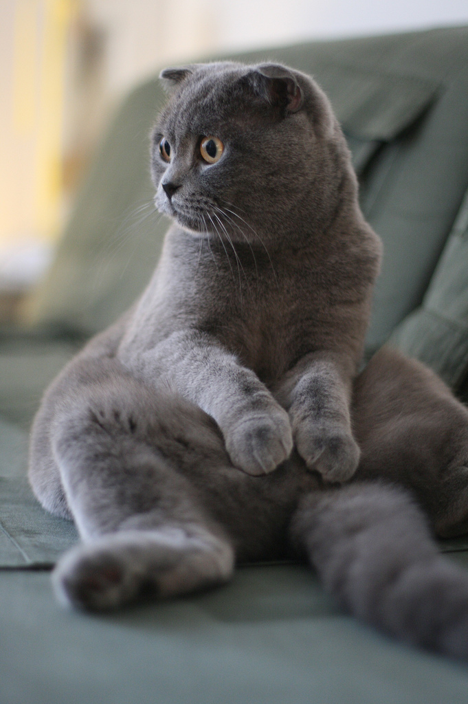

— одна из самых красивых и молодых пород; первая кошечка появилась в Шотландии в 60-х годах XX века. Главная особенность указана в названии — это вислоухость, которая возникла из-за мутации. Необычные уши в сочетании с большими глазами придают кошке трогательный беззащитный вид. Скоттиш-фолды бывают коротко и длинношерстные и встречаются в самых разнообразных окрасах.
Характер:
Шотландские вислоухие — интеллигенты в мире кошек. Это умные, сдержанные однолюбы, которые не потерпят приставаний от незнакомых людей. Иногда они могут поиграть, но чаще предпочтут шумному веселью укромное место. Шотландцы редко выпускают когти для нападения и в целом не агрессивны, однако если вы нарушите личные границы питомца — он выскажет недовольство. Скоттиш-фолд хорошо уживается и с детьми, и с другими домашними питомцами (если процедура знакомства была проведена грамотно).